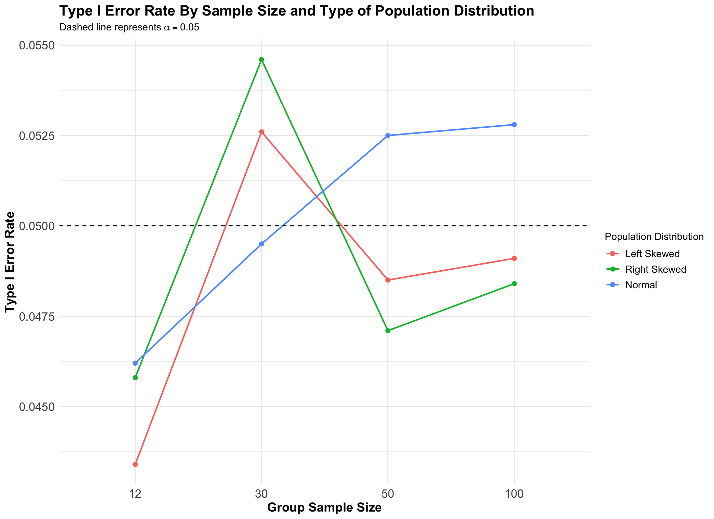

library(sn)
library(tidyverse)
set.seed(4747)
# We will use rnorm() to draw samples from the normally distributed population.
# Let's create a function that will draw samples from the right-skewed population.
right_skew_pop_dist <- rsn(5000000, xi = 0, omega = 1, alpha = 5)
right_skew_pop_mean <- mean(right_skew_pop_dist) # Lets establish an estimate for the right-skewed population mean.
right_skew_pop_sd <- sd(right_skew_pop_dist) # Lets establish an estimate for the right-skewed population standard deviation.
right_skew <- function(n) {
((rsn(n, xi = 0, omega = 1, alpha = 5)) - right_skew_pop_mean) / right_skew_pop_sd # This procedure is done as the right-skewed distribution generated is not centered at 0 and does not a standard deviation of 1; however, we can standardize our samples such that we statisfy this condition.
}
# Let's create a function that will draw samples from the left-skewed population.
left_skew_pop_dist <- rsn(5000000, xi = 0, omega = 1, alpha = -5)
left_skew_pop_mean <- mean(left_skew_pop_dist) # Lets establish an estimate for the left-skewed population mean.
left_skew_pop_sd <- sd(left_skew_pop_dist) # Lets establish an estimate for the left-skewed population standard deviation.
left_skew <- function(n) {
((rsn(n, xi = 0, omega = 1, alpha = -5)) - left_skew_pop_mean) / left_skew_pop_sd # This procedure is done as the left-skewed distribution generated is not centered at 0 and does not a standard deviation of 1; however, we can standardize our samples such that we statisfy this condition.
}Testing Welch’s Two-Sample t-Test Performance: Effects of Normality Violations and Sample Size on the Type I Error Rate
Introduction
Developed by B. L. Welch, Welch’s two-sample t-test provides a statistical method for determining whether the unknown population means of two groups are equivalent when the variances are not equal across the two groups1. Like other statistical tests, Welch’s two-sample t-test relies on the following technical assumptions:
- Observations are continuous (not discrete).
- The two samples are independent, meaning that observations within each sample are independent of one another.
- Each sample is a simple random sample from its population.
- Each sample is collected from a normally distributed population. This condition is especially needed when sample sizes are small such that the Central Limit Theorem does not apply.
Now, what happens when the normality assumption is not fulfilled? In other words, how does Welch’s two-sample t-test perform when samples are drawn from skewed distributions? How does the Type I error rate—the probability of rejecting a true null hypothesis (a false positive)—change?
This project seeks to answer these questions by exploring the following:
How does violating the normality assumption of Welch’s two-sample t-test affect its Type I error rate, and can increasing the sample size help reduce the impact?
This project is motivated by the fact that real world data is rarly perfect, and populations are not always normally distributed. Thus, it becomes particularly important to study how statistical tests perform when the assumptions they rely on are not fully met.
Methodology
Simulation Parameters
- This project will use a significance level (\(\alpha\)) of 0.05, or \(\alpha\) = 0.05.
- To model violations of the normality assumption, this project will utilize both a right-skewed and a left-skewed population, in which samples will be taken from.
- Additionally, a normally distributed population will be used to help facilitate comparison.
- All distributions will be centered at 0 and have a standard deviation of 1, as a control and a way to solely isolate the effect the distribution shape itself.
- This project will work with group samples sizes of 12, 30, 50, and 100.
Simulation Hypotheses for Hypothesis Test
Let \(\mu_{G1}\) represent the population mean of group 1. Let \(\mu_{G2}\) represent the population mean of group 2.
\(H_0: \mu_{G1} = \mu_{G1}\)
\(H_A: \mu_{G1} \neq \mu_{G1}\)
General Simulation Procedure
Having established some set parameters, let’s now describe how we will tackle our project question by looking at what will happen in our simulation:
- Generate two independent samples from the same distribution (either normal, right-skewed, or left-skewed) of same size (either 12, 30, 50, or 100).
- Apply Welch’s two-sample t-test (two-sided) on samples.
- Record the resulting p-value and whether we reject the null hypothesis (\(\mu_{G1} = \mu_{G1}\)) at \(\alpha\) = 0.05.
- Repeat steps 1-3 for 10,000 times and for all combinations of distributions and sample sizes.
Post-simulation Procedure: Calculating Type I Error Rate
Having collected data on whether each simulation rejected the null hypothesis or not, we can use this to calculate the Type I error rate for all combinations of distributions and sample sizes.
Recall that both samples in each simulation are taken from the same distribution. Thus, the null hypothesis is always true, since the population of group 1 and group 2 are the same and so the population means are the same for both groups. As a result, any simulation in which Welch’s two-sample t-test rejected the null hypothesis is considered a Type I error.
Therefore, we can calculate the Type I error rate for each combination as the number of simulations that rejected the null hypothesis for that combination divided by the total number of simulations for that combination.
Simulation Code
Creating Simulation Functions
First, let’s create the functions that will sample from the normal, right-skewed, and left-skewed population distributions.
Now, let’s create the functions that will ulitize the functions above to generate two samples and perform Welch’s two-sample t-test on those samples.
# Create function that will conduct Welch's two-sample t-test given each group's sample size (n) and a distribution to sample from (func).
sim_Wtest <- function(n, func){
# Convert function name from string to function.
func <- match.fun(func)
# Generate two samples from same distribution.
group1 <- func(n)
group2 <- func(n)
# Apply Welch's two-sample t-test.
t.test(group1, group2, alternative = "two.sided", var.equal = FALSE)
}
# Create function that will conduct Welch's two-sample t-test 10,000 times on two groups given a specific group sample size (n) and a distribution to sample from (func).
sim_Wtest_10000 <- function(n, func){
map(1:10000, .f = function(y) sim_Wtest(n, func))
}Running Simulations and Calculating Type I Error Rate
# Create a data frame with all possible combinations of distributions and sample size.
sample_size <- c(12,30,50,100)
func <- c("rnorm", "right_skew", "left_skew")
combo_dist_sampsize <- expand.grid(sample_size = sample_size, func = func, stringsAsFactors = FALSE)
# Lets run 10,000 simulations/Welch's t-tests on each possible combination of distributions and sample size.
results <- map2(combo_dist_sampsize$sample_size, combo_dist_sampsize$func, sim_Wtest_10000)
# Let's combine all simulations with their corresponding p-values into a data frame that will be used later to vizualize our results and findings.
results.df <- combo_dist_sampsize |>
mutate(results = results) |>
mutate(p_values = map(results, .f = function(x) map_dbl(x, .f = function(y) y$p.value))) |>
select(sample_size, func, p_values) |>
unnest_longer(p_values) |>
mutate(RejectNull = (p_values <= 0.05))
# Let's calculate the Type I error rate for each combination of distribution and sample size.
results_withTypeI.df <- results.df |>
filter(RejectNull == TRUE) |>
group_by(sample_size, func) |>
summarize(NumTRUE = n()) |>
mutate(TypeIRate = (NumTRUE / 10000))
results_withTypeI.df# A tibble: 12 × 4
# Groups: sample_size [4]
sample_size func NumTRUE TypeIRate
<dbl> <chr> <int> <dbl>
1 12 left_skew 434 0.0434
2 12 right_skew 458 0.0458
3 12 rnorm 462 0.0462
4 30 left_skew 526 0.0526
5 30 right_skew 546 0.0546
6 30 rnorm 495 0.0495
7 50 left_skew 485 0.0485
8 50 right_skew 471 0.0471
9 50 rnorm 525 0.0525
10 100 left_skew 491 0.0491
11 100 right_skew 484 0.0484
12 100 rnorm 528 0.0528Results
Code
# Let's visualize our results
results_withTypeI.df |>
ggplot(aes(x = as.factor(sample_size), y = TypeIRate, color = func, group = func)) +
geom_line(linewidth = 0.8) +
geom_point(size = 2) +
geom_hline(yintercept = 0.05, linetype = "dashed") +
labs(title = "Type I Error Rate By Sample Size and Type of Population Distribution", subtitle = expression("Dashed line represents" ~ alpha == 0.05), x = "Group Sample Size", y = "Type I Error Rate", color = "Population Distribution") +
theme_minimal() +
theme(plot.title = element_text(face = "bold", size = 16), axis.title = element_text(face = "bold", size = 14), axis.text = element_text(size = 13), legend.title = element_text(size = 11), legend.text = element_text(size = 11)) +
scale_color_discrete(labels = c("Left Skewed", "Right Skewed", "Normal"))
Code
# results.df |>
# ggplot(aes(x = p_values)) +
# geom_histogram() +
# facet_wrap(~func)Footnotes
Unlike Student’s two-sample t-test↩︎